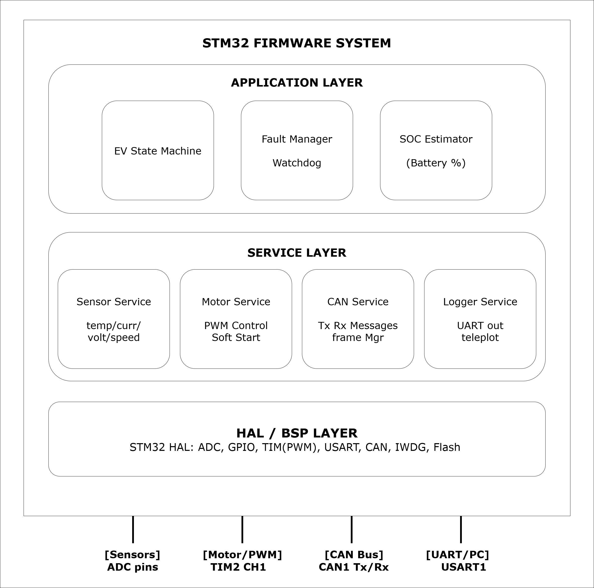

Basesync - EV ECU Firmware Platform
Production-Grade EV ECU Firmware - Built From Scratch
The Problem
Most embedded hobby or student EV projects write firmware directly in main.c with no architecture, no testing, and no way to catch dangerous faults before they reach hardware. A real EV ECU running in a vehicle needs to handle overcurrent events, thermal runaway signals, and sensor failures - and it needs to do so reliably, every cycle, without crashing or hanging. The challenge was to build a firmware platform that meets automotive-grade reliability standards, with a full DevOps pipeline, on a 4-engineer team using open tooling.
What I Built
I architected a layered firmware platform (Application → Service → HAL) for an Electric Vehicle ECU targeting STM32 ARM Cortex-M microcontrollers. The layering ensures each module has a single responsibility - the application layer knows nothing about hardware registers, and the HAL layer knows nothing about vehicle logic. This makes the firmware testable, maintainable, and portable.
The EV state machine manages 5 system states and handles real-world fault scenarios: battery temperature breaches, motor overheating, overcurrent detection, and throttle/brake signal conflicts. On any critical fault, the system transitions to a defined Safe State - cutting motor PWM, broadcasting a fault frame on the CAN Bus, and logging the event over UART.
The CAN Bus architecture covers 4 message IDs: EV_STATUS (0x100) broadcast every 100ms with vehicle state and fault flags; SENSOR_PACK_1 (0x101) and SENSOR_PACK_2 (0x102) for battery, motor, and throttle telemetry; and FAULT_FRAME (0x1FF) sent immediately on any fault event. This mirrors real automotive ECU communication patterns.
I built the entire embedded CI/CD pipeline from scratch using GitHub Actions. Every pull request triggers: ARM cross-compilation check, Unity unit test runner, Cppcheck static analysis with MISRA-C inspired rules, and Snyk security scanning. Code cannot merge if any stage fails. This is the kind of pipeline most embedded teams don't have - and it's the most direct way to demonstrate engineering discipline to a client.
A Software-in-the-Loop (SIL) workflow using Wokwi and VS Code enables virtual hardware testing with a simulated STM32, potentiometers for throttle control, and buttons for fault injection - all without physical hardware. This lets the team validate throttle response, brake logic, and fault transitions in simulation before touching real silicon.
Results & Key Metrics
- CI/CD pipeline covering build, unit tests, static analysis, and security scanning - all automated on every PR
- Unity unit test coverage target: >80% across core modules
- 8 sensors sampled at 10–100ms intervals across ADC, GPIO, and encoder interfaces
- 4 CAN Bus message IDs covering real-time status, sensor telemetry, and fault reporting
- 5-state EV state machine with deterministic Safe State transitions on fault detection
- Full SIL test suite covering throttle, brake, and fault-injection scenarios - no hardware required
- MISRA-C inspired coding standards enforced automatically in the pipeline via Cppcheck
- CMake-based cross-compilation toolchain for ARM GCC - reproducible builds across the team
System Architecture

What's Next
The roadmap includes FreeRTOS integration for task scheduling, a bootloader for OTA firmware updates, HIL (Hardware-in-the-Loop) validation on physical STM32 hardware, and a HARA (Hazard Analysis and Risk Assessment) aligned with ISO 26262. The project is actively in Sprint 2, adding sensor HAL and motor control modules.
Project Information
- Category EV / Automotive Firmware
- Platform STM32, ARM Cortex-M
- Language Embedded C (76%), C++ (22%)
- Protocols CAN Bus, UART, ADC, GPIO, PWM
- CI/CD GitHub Actions, Unity, Cppcheck, Snyk
- Simulation Wokwi SIL + VS Code
- Team 4-engineer Agile / Scrum
- Started January 2026
- Status Active - In Development
- View on GitHub